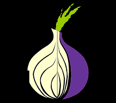

Täältä löydät linkkejä erinlaisille sivustoille dark webbiin. Muista että tarvitset Tor selaimen että voit käyttää linkkejä.
Hiddenwiki - Hiddenwiki on englannin kielinen wiki josta löytää paljon onion linkkejä. Et välttämättä halua vierailla kaikilla sivuilla joita sieltä löydät.
http://zqktlwiuavvvqqt4ybvgvi7tyo4hjl5xgfuvpdf6otjiycgwqbym2qad.onion/wiki/index.php/Main_Page
Ahmia - Ahmia on Tor verkossa toimiva hakukone jolla voit hakea onion linkkejä. Se on todella hyvä ja kaikenlisäksi suomalainen.
